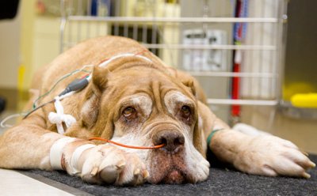

Case Reports
This page features some of the pet's we have seen at the Animal Emergency Center.
"Lily Bear" - Gastric Torsion

Lily Bear is a 6 year old female Mastiff that was rescued by Sugarland Ranch. She was treated at Animal Emergency Center for a very serious condition called Gastric Dilitation and Volvulus (GDV). This condition is also called Gastric Torsion, Stomach Bloat or often just simply Bloat.
GDV is a life threatening condition that is most commonly seen in large, deep chested dogs. The exact cause of the condition is unknown. Dogs that are fed one large meal, "nervous" dogs, dogs with a family history of GDV and older dogs are at a higher risk of developing GDV. In a GDV the stomach twists around on itself which allows air to get into the stomach. The air becomes trapped and continues to build up, but cannot get out. The stomach becomes so distended with air that it leads to compression of the body's major blood vessels causing organ damage.
The symptoms of GDV include abdominal bloating, restlessness, non productive vomiting and retching. If a GDV is not treated quickly and aggressively dogs will go into shock and can die very quickly.
Treatment for GDV includes treatment for shock, decompressing the stomach and then surgery. The goal of surgery is to reposition the stomach to it's normal position and then "tack" the stomach to the side of the body wall to prevent the stomach from twisting again. This is called a gastropexy. This procedure is ~95% successful in preventing a reoccurrence of GDV.
GDV is such a serious disorder that even after surgery dogs are at a high risk of complications for several days. These complications include abnormal heart rhythms, blood clots and DIC. DIC is a very complicated syndrome where initially the body starts forming blood clots which leads to a consumption of the building blocks for clotting. Once these building blocks are used up, internal bleeding can occur.
There is not a lot that can be done to prevent a GDV. Feeding several smaller meals a day and limiting exercise after eating should be done in large deep chested dogs. In high risk breeds with a family history of GDV a prophylactic gastropexy at an early age can be considered.
Fortunately for Lily Bear, her owner's recognized her symptoms early and she was taken immediately to Animal Emergency Center. Upon presentation an X-Ray was taken to confirm her condition. She was in the early stages of shock. Shock treatment was started immediately and she was given IV fluids and pain medication and then her stomach was decompressed. She was then taken to surgery. During surgery it was found that the blood vessels going to her spleen had torn and she had some internal bleeding. Her spleen also had to be removed. Her stomach was repositioned and then a gastropexy was performed to attach the right side of her stomach to the right side of the abdomen.
Because of her internal bleeding she required a blood transfusion post operatively. This is an uncommon complication of GDV. She was on IV fluids, pain medication, Oxygen and supportive care for 2 days after surgery. Lily Bear was treated both here at AEC as well as at her regular veterinarian, Baring Blvd during the day. She was able to be discharged on the third day and is now doing very well. To read more about Sugarland Ranch and please visit the
Sugarland Ranch Website
.
"Tai" - Rattlesnake Bite
Tai is a 10 month old Labrador cross pup that was adopted from the Humane Society. He's a very good puppy, but he has a bad habit of sticking his nose in places it doesn't belong. One morning late this summer while on a hike, he stuck his nose in a bush that had a Rattlesnake in it and was bit on the tip of the nose.
Tai was taken immediately to the Animal Emergency Center and received treatment for his bite. He had blood tests to evaluate for complications of related to rattlesnake bites, such as blood clotting disorders. He was given IV fluids to prevent his blood pressure from dropping and pain medication because snake bites can be very painful.
Rattlesnake bites can be serious, especially in small dogs, cats and animals that get bit multiple times. The symptoms of Rattlesnake bites are - small puncture wounds that often ooze bloody fluid, rapid swelling around the bite, pain and in more severe cases shock. Fortunately, the Rattlesnakes in our area are less venomous than many Rattlesnake species and fatalities are rare. Rattlesnake bite patients should have blood testing to monitor for complications, blood pressure monitoring, IV fluids, pain medication and in some cases Antivenin. Because of the cost and potential side effects of Antivenin, it's use is generally reserved for small dogs, dogs that have received multiple bites, and/or dogs that are showing signs of shock. Antibiotics are also sometimes used, though some studies show that the actual incidence of infection after a snake bite is very low.
Tai responded well to treatment and was able to go home the next morning. It took 3 day's for to resolve completely.
The photos below show Tai before he was bitten and a photo taken 24 hours after he had been bitten.